These helper functions are built on top of ggplot2::layer() and can be
used to add geom(s), whose type and content are specified as a list.
Arguments
- x
A list containing:
a geom type (e.g.
geom = "point"),a list of aesthetics (e.g.
aes = list(x = "mpg", y = "wt")),some data (e.g.
data = mtcars),and some other parameters.
For
geoms_from_list()("geoms" with an "s"), the input must be a list of lists, ideally named"l1", "l2", "l3", etc.- ...
Additional arguments passed to
ggplot2::layer().
Examples
library(ggplot2)
# Example 1 (basic geoms and labels) --------------------------
l1 <- list(
geom = "point",
data = mtcars,
aes = list(x = "mpg", y = "wt", size = "hp", color = "hp"),
show.legend = c("size" = FALSE)
)
l2 <- list(
geom = "labs",
title = "A Title"
)
ggplot() +
geom_from_list(l1) +
geom_from_list(l2)
ggplot() +
geoms_from_list(list(l1 = l1, l2 = l2))
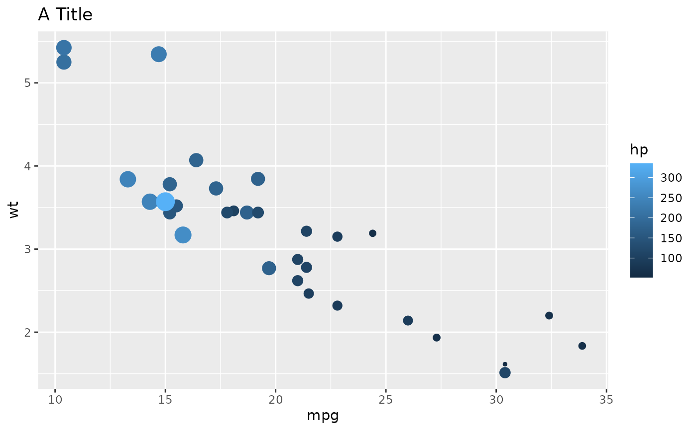
# Example 2 (Violin, boxplots, ...) --------------------------
l1 <- list(
geom = "violin",
data = iris,
aes = list(x = "Species", y = "Sepal.Width")
)
l2 <- list(
geom = "boxplot",
data = iris,
aes = list(x = "Species", y = "Sepal.Width"),
outlier.shape = NA
)
l3 <- list(
geom = "jitter",
data = iris,
width = 0.1,
aes = list(x = "Species", y = "Sepal.Width")
)
ggplot() +
geom_from_list(l1) +
geom_from_list(l2) +
geom_from_list(l3)
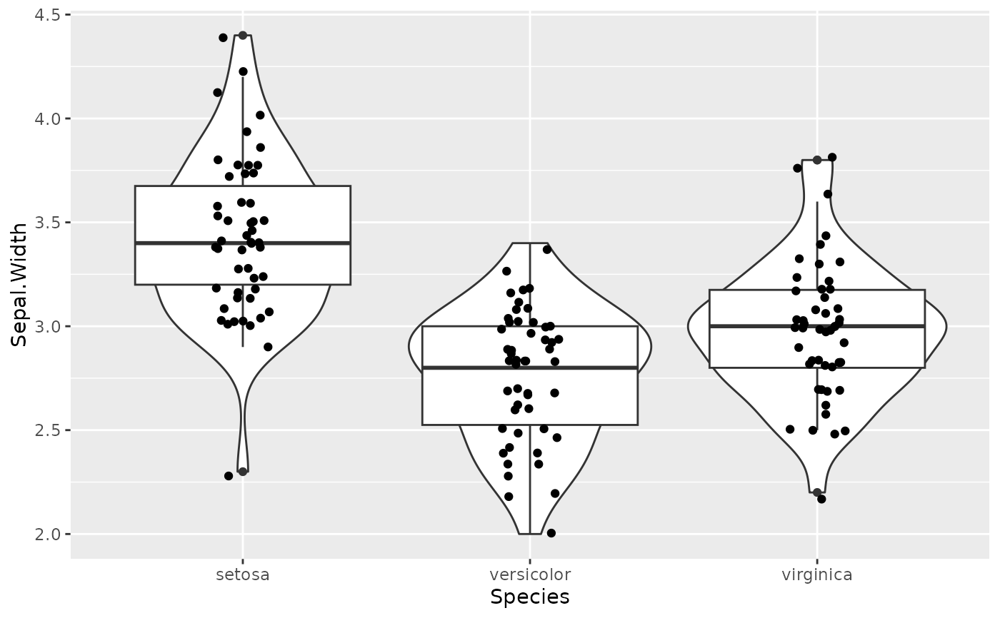
# Example 3 (2D density) --------------------------
ggplot() +
geom_from_list(list(
geom = "density_2d", data = iris,
aes = list(x = "Sepal.Width", y = "Petal.Length")
))
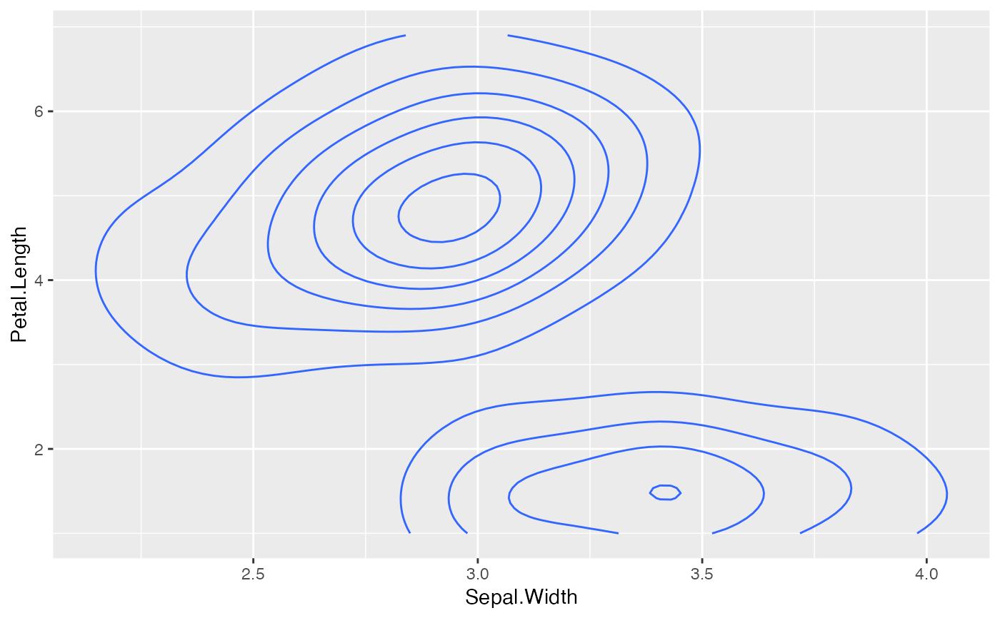
ggplot() +
geom_from_list(list(
geom = "density_2d_filled", data = iris,
aes = list(x = "Sepal.Width", y = "Petal.Length")
))
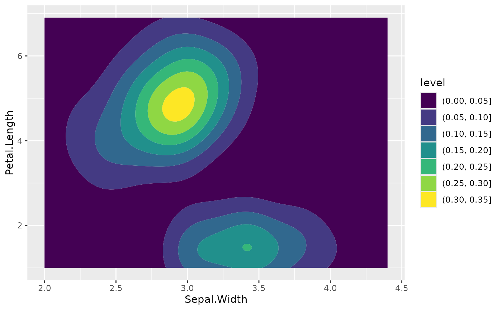
ggplot() +
geom_from_list(list(
geom = "density_2d_polygon", data = iris,
aes = list(x = "Sepal.Width", y = "Petal.Length")
))
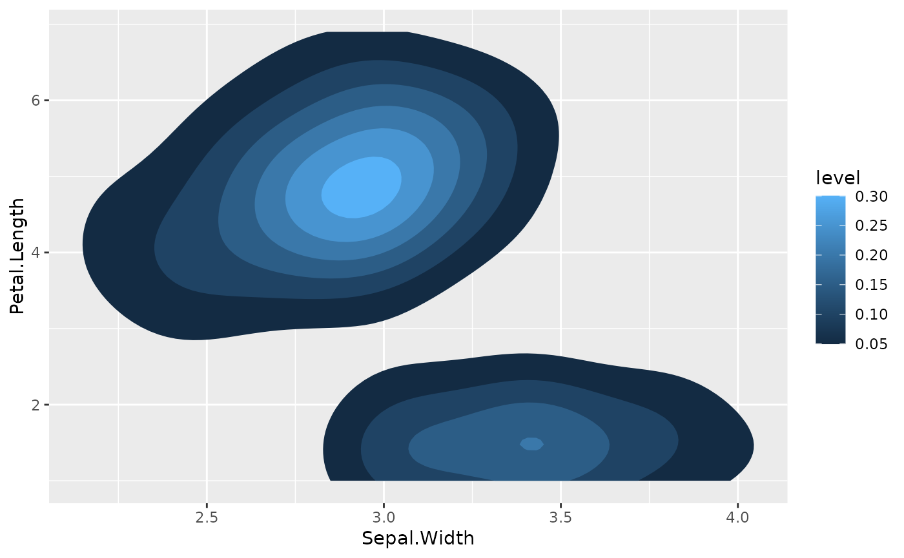
ggplot() +
geom_from_list(list(
geom = "density_2d_raster", data = iris,
aes = list(x = "Sepal.Width", y = "Petal.Length")
)) +
scale_x_continuous(expand = c(0, 0)) +
scale_y_continuous(expand = c(0, 0))
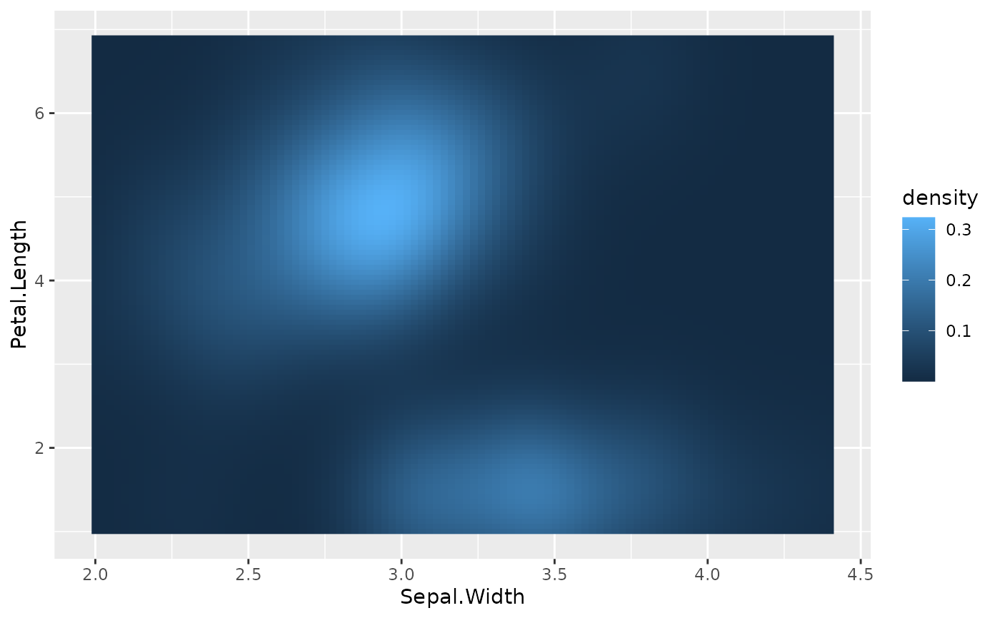
# Example 4 (facet and coord flip) --------------------------
ggplot(iris, aes(x = Sepal.Length, y = Petal.Width)) +
geom_point() +
geom_from_list(list(geom = "hline", yintercept = 2)) +
geom_from_list(list(geom = "coord_flip")) +
geom_from_list(list(geom = "facet_wrap", facets = "~ Species", scales = "free"))
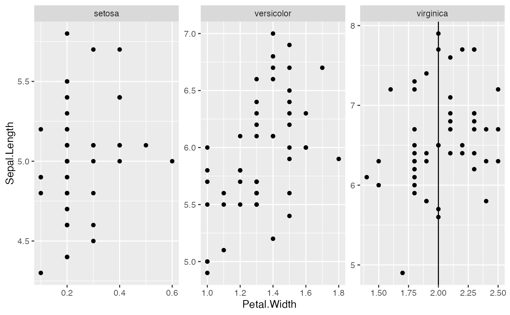
# Example 5 (theme and scales) --------------------------
ggplot(iris, aes(x = Sepal.Length, y = Petal.Width, color = Species)) +
geom_point() +
geom_from_list(list(geom = "scale_color_viridis_d", option = "inferno")) +
geom_from_list(list(geom = "theme", legend.position = "top"))
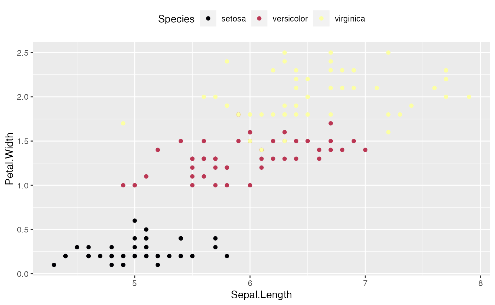
ggplot(iris, aes(x = Sepal.Length, y = Petal.Width, color = Species)) +
geom_point() +
geom_from_list(list(geom = "scale_color_material_d", palette = "rainbow")) +
geom_from_list(list(geom = "theme_void"))
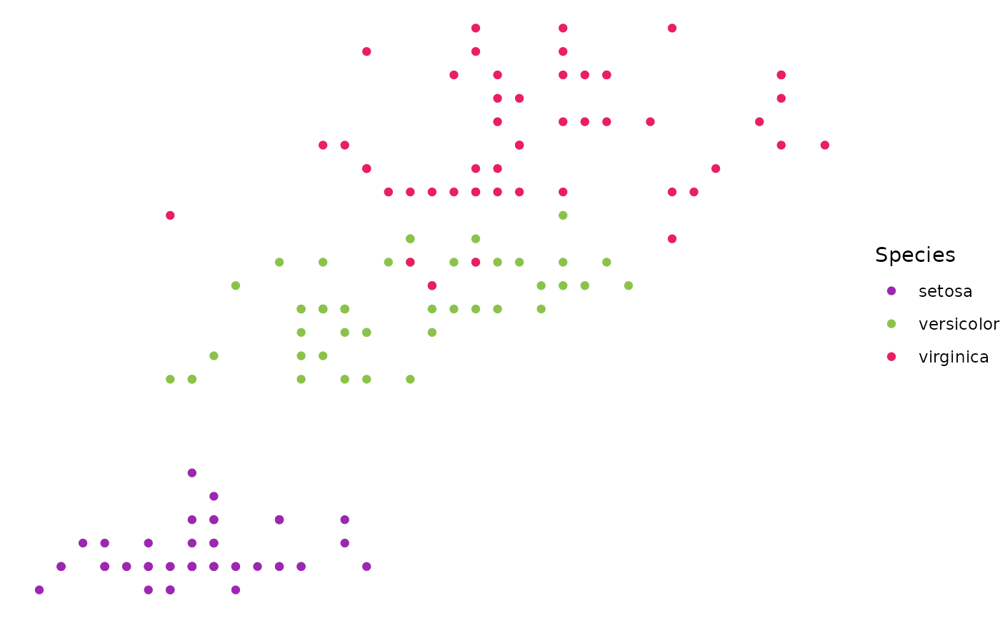
# Example 5 (Smooths and side densities) --------------------------
ggplot(iris, aes(x = Sepal.Length, y = Petal.Width)) +
geom_from_list(list(geom = "point")) +
geom_from_list(list(geom = "smooth", color = "red")) +
geom_from_list(list(aes = list(x = "Sepal.Length"), geom = "ggside::geom_xsidedensity")) +
geom_from_list(list(geom = "ggside::scale_xsidey_continuous", breaks = NULL))
#> Registered S3 method overwritten by 'ggside':
#> method from
#> +.gg ggplot2
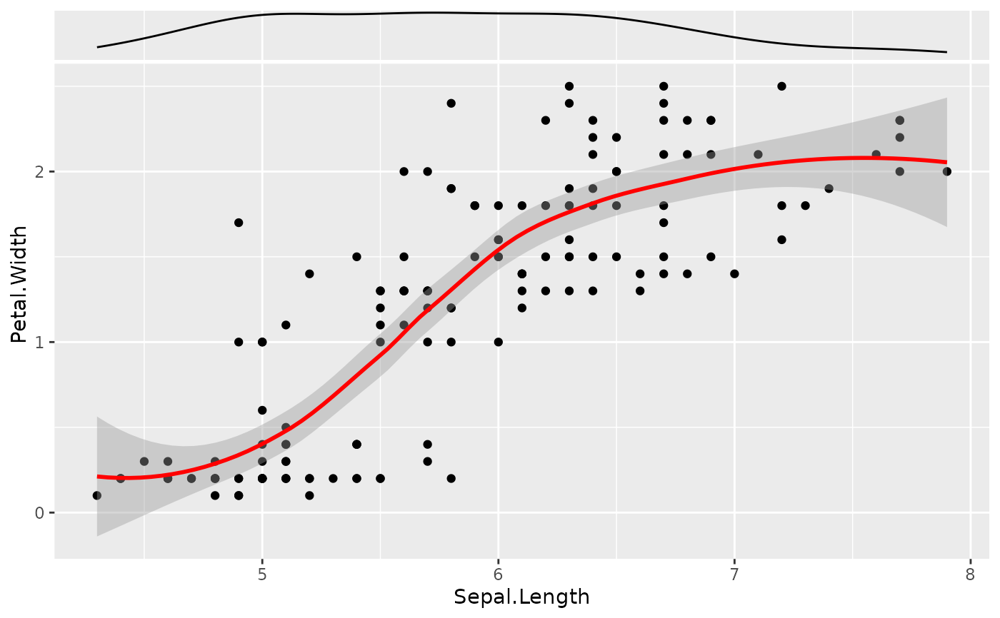
# Example 6 (ggraph) --------------------------
if (require("tidygraph", quietly = TRUE) &&
require("ggraph", quietly = TRUE)) {
# Prepare graph
nodes <- data.frame(name = c("Dom", "Mattan", "Daniel", "Brenton"))
edges <- data.frame(
from = c(1, 1, 1, 2, 3, 3, 4, 4, 4),
to = c(2, 3, 4, 1, 1, 2, 1, 2, 3)
)
data <- tidygraph::tbl_graph(nodes = nodes, edges = edges)
ggraph(data, layout = "kk") +
geom_from_list(list(geom = "ggraph::geom_edge_arc")) +
geom_from_list(list(geom = "ggraph::geom_node_point", size = 10)) +
geom_from_list(list(geom = "ggraph::geom_node_label", aes = list(label = "name")))
}
#>
#> Attaching package: ‘tidygraph’
#> The following objects are masked from ‘package:poorman’:
#>
#> %>%, anti_join, arrange, contains, distinct, ends_with, everything,
#> filter, full_join, group_by, group_data, group_indices, group_keys,
#> group_size, group_vars, groups, inner_join, left_join, matches,
#> mutate, n, n_groups, num_range, pull, rename, right_join, select,
#> semi_join, slice, starts_with, transmute, ungroup
#> The following object is masked from ‘package:stats’:
#>
#> filter
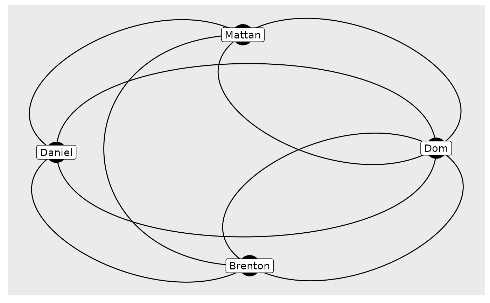